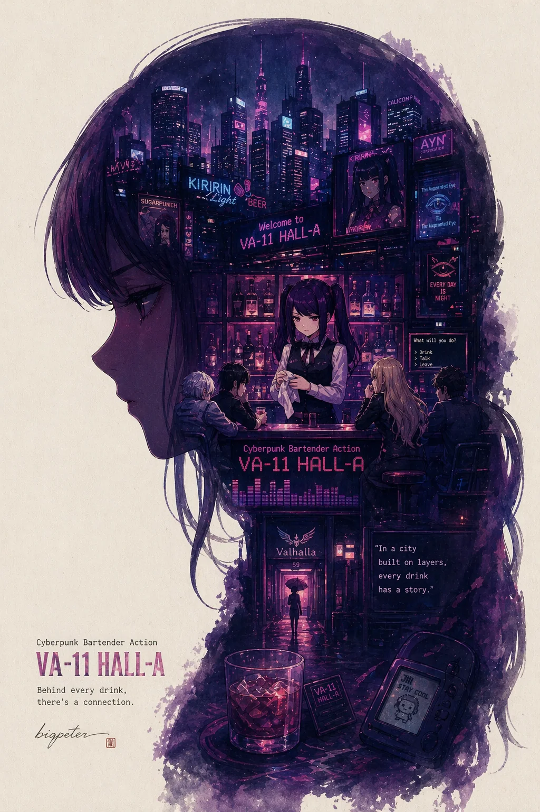

最近尝试了GPT-image-2的图像生成功能，结果真的有点震惊到我了。作为一个长期关注AI技术发展的人，我见过不少图像生成模型，但GPT-image-2在文字处理、风格一致性和创意表达方面的表现，确实超出了我的预期。本文将分享我的使用体验、生成的图片效果以及对这一技术的思考。
初识GPT-image-2
GPT-image-2是OpenAI最新推出的图像生成模型，相比前代产品，它在理解复杂提示词、保持风格一致性以及处理文字元素方面有了显著提升。最让我惊讶的是，它能够准确理解并执行包含详细艺术指导的提示词，生成具有高度一致性和艺术感的图像。
我的使用体验
提示词设计
我使用了以下提示词来测试GPT-image-2的能力：
根据【米塔】自动生成一张收藏版史诗叙事海报：巨大优雅的人物侧脸剪影作为外轮廓，剪影内部自动生长出最契合该主题的完整世界观、标志性场景、角色关系、象征符号、关键建筑、生物、道具与氛围。整体不是普通拼贴，而是高级的剪影轮廓填充式叙事合成，带有双重曝光式联想，但更偏电影海报与梦幻水彩插画融合风格；柔和空气透视，轻雾化过渡，纸张颗粒，边缘飞白与刷痕，大面积留白，版式克制高级，安静、宏大、神圣、怀旧、诗意、传说感强。风格、色彩、场景、材质全部根据主题自动适配，所有元素必须强绑定主题，一眼识别，不要杂乱，不要硬拼贴，不要模板化背景，不要廉价奇幻素材。画面中需自然加入专属签名“bigpeter”，作为海报设计的一部分，位置低调但清晰，可放在左下角、右下角或标题附近，风格需与整体版式统一，像收藏版海报的作者落款或设计签章；签名字体精致、克制、高级，不可过大，不可破坏主体构图，不可显得突兀廉价。
这个提示词包含了多个层次的指令： 1. 主题要求：基于“米塔”生成史诗叙事海报 2. 构图指导：人物侧脸剪影作为外轮廓，内部填充相关元素 3. 风格描述：电影海报与梦幻水彩插画融合 4. 技术要求：空气透视、雾化过渡、纸张颗粒等细节 5. 品牌标识：自然融入“bigpeter”签名 6. 负面约束：避免杂乱、硬拼贴、模板化背景等
生成结果
GPT-image-2生成了三张令人惊叹的图像：
1. 米塔主题海报
 {:width="800" style="max-width: 100%; height: auto;"}
{:width="800" style="max-width: 100%; height: auto;"}
这张图片完美实现了提示词中的所有要求：
- 剪影构图：优雅的人物侧脸剪影作为整体框架
- 内部叙事：剪影内部填充了与“米塔”主题相关的场景和符号
- 风格融合：电影海报的宏大感与水彩插画的柔和质感完美结合
- 细节处理：纸张颗粒、边缘飞白等纹理细节处理得非常自然
- 签名集成：“bigpeter”签名以设计签章的形式融入左下角，不破坏整体构图
2. VA-11主题图像

{:width="800" style="max-width: 100%; height: auto;"}这张图片展示了GPT-image-2对不同主题的适应能力。虽然提示词主要针对“米塔”，但模型能够根据“VA-11”这一主题自动调整风格和元素，生成具有赛博朋克美学特征的图像。
3. 星露谷主题图像
 {:width="800" style="max-width: 100%; height: auto;"}
{:width="800" style="max-width: 100%; height: auto;"}
这张图片体现了模型对轻松、田园风格主题的处理能力。温暖的色调、自然的元素布局以及整体的和谐感，都显示了GPT-image-2在风格适配方面的强大能力。
技术亮点分析
1. 文字处理能力
最让我震惊的是GPT-image-2对文字的处理。在“米塔”海报中，“bigpeter”签名不仅被准确生成，而且：
- 字体风格：与整体艺术风格保持一致
- 位置选择：低调地融入构图，不显突兀
- 大小控制：恰到好处，既清晰可见又不喧宾夺主
2. 风格一致性
三张图片虽然主题不同，但都保持了高水平的艺术品质：
- 色彩协调：每张图片的配色方案都与主题高度契合
- 纹理统一：纸张颗粒、刷痕等细节在不同图片中保持一致性
- 构图平衡：无论是宏大叙事还是轻松田园，构图都经过精心设计
3. 创意表达
GPT-image-2不仅仅是执行指令，更是进行创意表达：
- 元素关联：能够理解主题内涵，生成相关的象征符号
- 情感传达：通过色彩、构图和细节传达特定的情感氛围
- 叙事能力：在单张图像中构建完整的视觉叙事
使用建议
基于我的使用经验，以下是一些使用GPT-image-2的建议：
1. 提示词设计
- 具体明确：提供详细的风格、构图、色彩指导
- 分层描述：从整体概念到细节要求，分层描述
- 负面约束：明确指出不希望出现的元素
- 示例参考：可以引用已知的艺术风格或作品作为参考
2. 迭代优化
- 小步快跑：先测试简单提示，逐步增加复杂度
- 多轮生成：同一提示生成多张图片，选择最佳结果
- 参数调整：尝试不同的尺寸、风格权重等参数
3. 创意合作
- 视为合作伙伴：将GPT-image-2视为创意合作伙伴，而非单纯工具
- 保持开放：接受模型可能带来的意外惊喜
- 融合创意：将AI生成结果作为创意起点，进行二次创作
技术思考
AI绘画的现状与未来
GPT-image-2的表现让我对AI绘画技术的发展有了新的认识：
1. 从模仿到创造：早期AI绘画更多是风格模仿，现在已能进行真正的创意表达 2. 从分离到融合：文字与图像的界限正在模糊，AI能够理解并执行复杂的跨模态指令 3. 从工具到伙伴：AI正在从被动工具转变为主动的创意合作伙伴
对创作者的影响
对于内容创作者而言，GPT-image-2这样的工具带来了新的可能性：
- 效率提升：快速生成高质量的视觉素材
- 创意扩展：突破个人技能限制，探索新的艺术风格
- 成本降低：减少对外部设计师的依赖，降低创作成本
但同时也要注意：
- 版权问题：AI生成内容的版权归属需要明确
- 风格同质：过度依赖AI可能导致创作风格趋同
- 技能保持：不应完全放弃传统绘画技能的学习和练习
总结
GPT-image-2的使用体验确实让我感到震惊。它不仅在技术上达到了新的高度，更重要的是，它展示了AI在创意领域的巨大潜力。通过精心设计的提示词，我们能够引导AI生成具有高度艺术价值和创意表达的图像。
这次体验也让我思考：当AI能够理解并执行如此复杂的创意指令时，人类创作者的角色将如何演变？我认为，未来的创作者将更像是“创意导演”，负责制定愿景、提供指导、做出选择，而AI则是强大的执行工具。
技术永远在进步，但创意的核心始终是人。 AI工具如GPT-image-2为我们打开了新的可能性，但最终的价值仍然来自于人类的想象力、审美判断和情感表达。
*本文所有图片均由GPT-image-2生成，已转换为WebP格式以优化加载速度。图片存储于本博客的assets/images/目录，遵循CC BY-NC 4.0协议共享。*